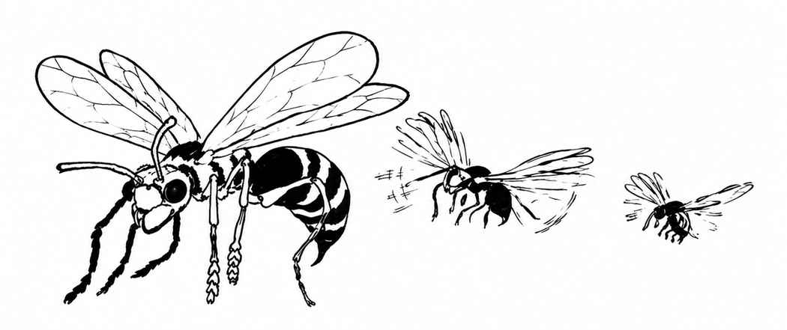
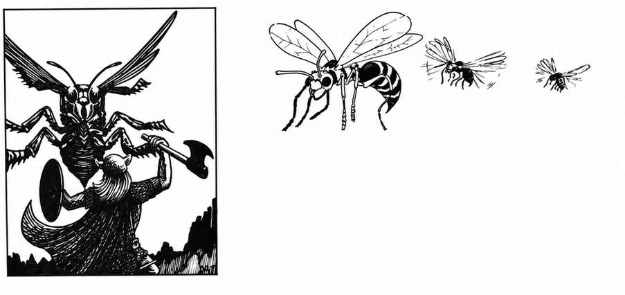
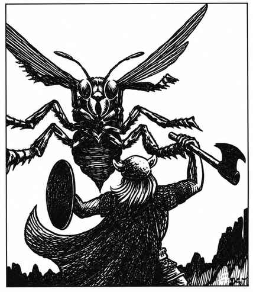

巨型黄蜂 · Wasp, Giant


 |
|
巨型黄蜂不断捕猎，因此令人畏惧，通常会吃掉猎物，并用卵使其麻痹。其他巨型昆虫最常成为受害者，但人类也不例外。某些黄蜂用泥筑卵室，最令人害怕的是用纸筑巢的种类，其巢穴中有 21–40 只成年黄蜂。
巨型黄蜂用强颚和毒刺攻击，毒刺可以反复使用。被刺中的目标必须进行毒素豁免，否则永久麻痹，并在 2–5 天内死亡，除非施展中和毒素或使用解毒剂；受害者通常会被幼虫吃掉。黄蜂翅膀极易受火焰伤害，在火球范围内或接触高温火焰会立即烧掉，但不会伤害黄蜂，只会使其无法飞行。